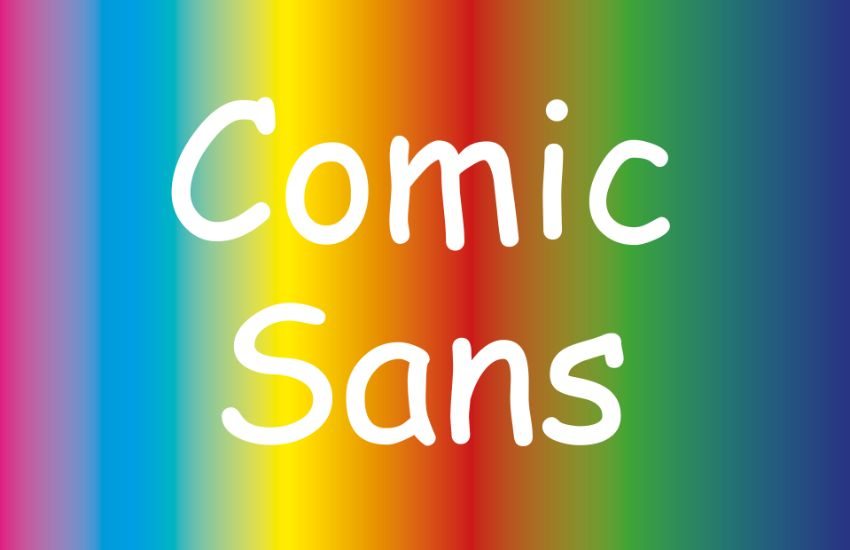
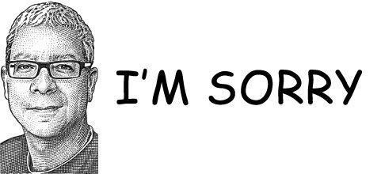
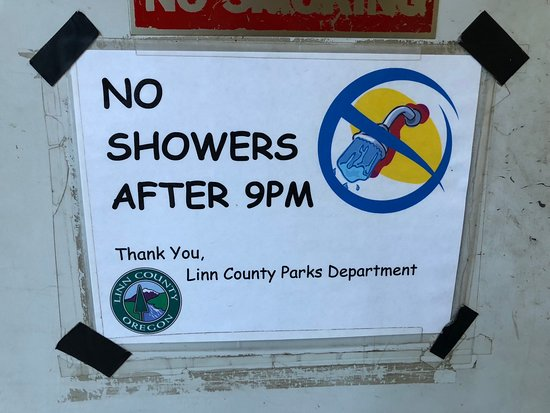
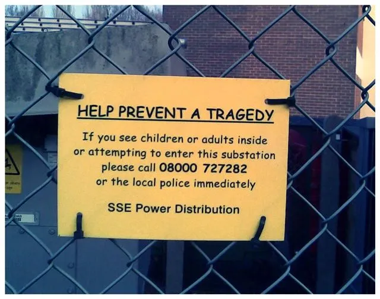

A casual, informal typeface designed to feel friendly, human, and unintimidating rather than formal or authoritative.

Designed by:
Vincent Connare
Foundry:
Microsoft
Country:
🌍 United States
Year:
1994
Intent:
- Mimic comic book text
- For on-screen speech bubbles
- Against stiff fonts like Times New Roman
- Focus on approachability, warmth, legibility
- Casual, playful, unintimidating
Connare aimed for a usability fix, not art.
Context:
- PCs entering homes, schools
- Desktop publishing growing
- Fonts used by non-designers
- No web typographic norms
Type classification:
Typography moved from pro control to mass use, misuse became visible.
- Sans serif
- Casual / informal / script-influenced
Characterised by:
- Irregular stroke widths
- Rounded, uneven letterforms
- Handwritten, comic-inspired shapes
- Loose spacing and informal rhythm
- Childlike, friendly tone
Compared to humanist or grotesque sans-serifs, Comic Sans is intentionally unsophisticated and expressive.
Examples in use:



- Microsoft Bob
- Early Windows UI and system dialogs
- School newsletters and classroom materials
- Informal flyers, signs, and notices
- Internet memes and parody design
Usage:
Do not use Comic Sans
Cheat Sheet
| Neutral | Overused |
|---|---|
| Helvetica Neue | Helvetica |
| Inter | Comic Sans |
| San Francisco | Montserrat |
| Neue Montreal | Raleway |
| General Sans | Lato |
| Neue Haas Grotesk | Arial |
| Nunito | |
| Oswald | |
| Roboto | |
| Poppins |
Notice these fonts are all nearly exclusively sans serif fonts because, I am not referencing display or logo fonts. This is only in reference to choosing your general copy and typeface hierarchy.